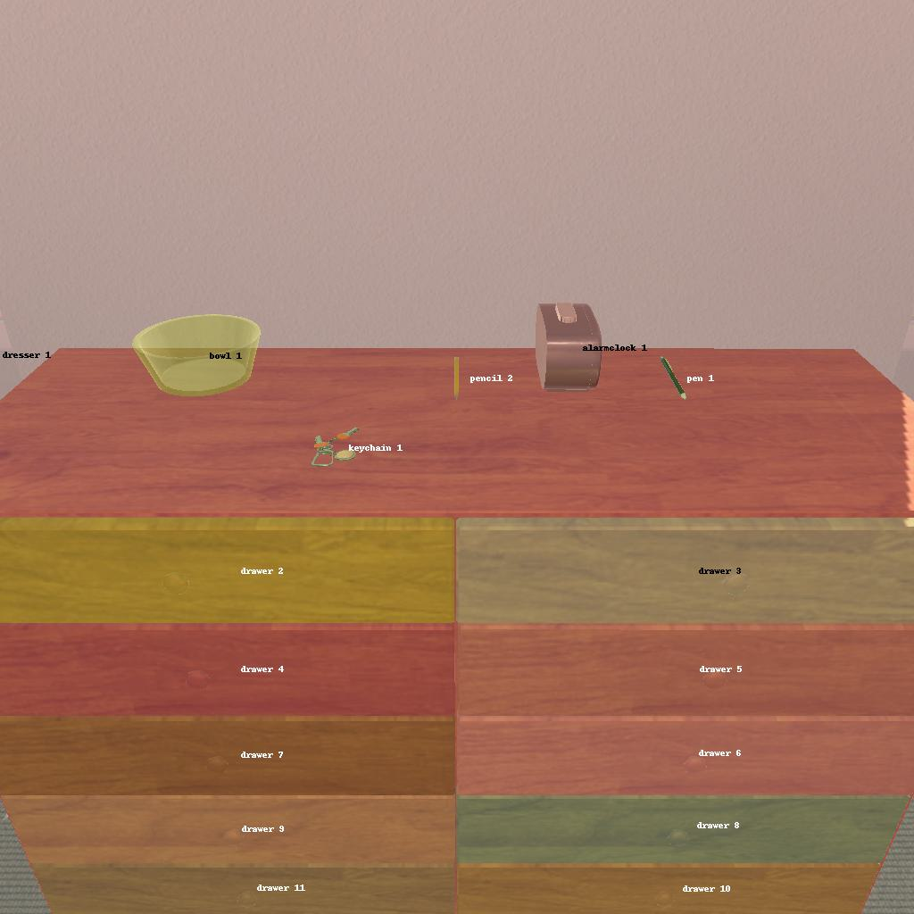
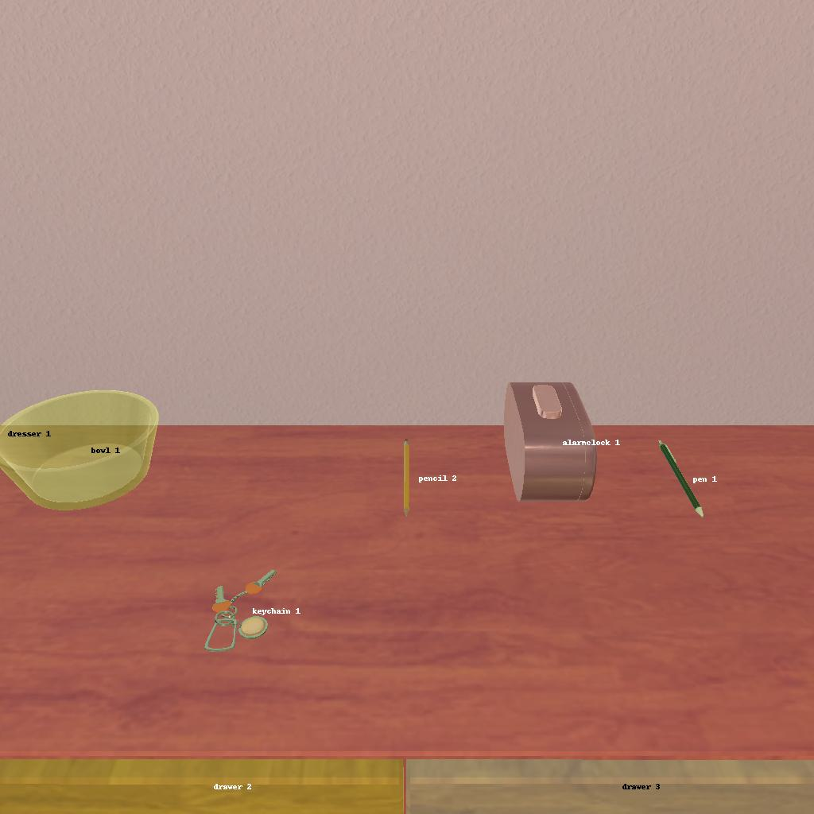

---------------------------------------------------------task: 0---------------------------------------------------------
--------------------------------------------------------------------------------------------------------------------------------------------------------------------
--------------------------------------------------------------------------------------------------------------------------------------------------------------------
Step:--------------------------------------------------------------------------5-------------------------------------------------------------------------------
----------------------------------------
VLM Prompt:
Image1:
Image2:
**Instruction**
1. Analyze the provided image to identify all visible household objects, focusing on those relevant to the task description "examine the alarmclock with the desklamp."
2. Use the analysis of the image and the task hint "The agent must find an object of the desired type, locate and turn on a light source with the desired object in-hand." to answer the question: what is the most reasonable action in the choices for the task description "examine the alarmclock with the desklamp"?
4. Decide and write the answer using the template: The answer is: (i): , where i is the real number. If there is no desired object in the image, search every place based on **Initial Observation** to find the object. And if no one is exactly correct, choose a similar answer.
**Initial Observation**
You are in the middle of a room. Looking quickly around you, you can see bed (1), sidetable (1), drawer (1-11), dresser (1), safe (1), laundryhamper (1), garbagecan (1)
**Answer Choices**
(1): go to bed 1
(2): go to drawer 1
(3): go to drawer 3
(4): go to drawer 4
(5): go to drawer 5
(6): go to drawer 6
(7): go to drawer 7
(8): go to drawer 8
(9): go to drawer 9
(10): go to drawer 10
(11): go to drawer 11
(12): go to safe 1
(13): go to laundryhamper 1
(14): go to garbagecan 1
(15): take bowl 1 from dresser 1
(16): take alarmclock 1 from dresser 1
(17): take keychain 1 from dresser 1
(18): take pen 1 from dresser 1
(19): take pencil 2 from dresser 1
(20): examine dresser 1
**Answer**
Let's think step by step by following the instructions.
----------------------------------------
----------------------------------------
Original Response:
The task is to "examine the alarmclock with the desklamp." From the images, we can see an alarm clock labeled "alarmclock 1" on dresser 1. However, there is no desklamp visible in the images provided.
Based on the Initial Observation, there is no mention of a desklamp either, but there could be one inside the drawers, or it might be elsewhere in the room not visible in the images.
Given the task description and the available answer choices, the most reasonable action would be to take the alarm clock to examine it. There's no action given to locate or turn on a desklamp, so we can only complete the first part of the task with the given options.
The answer is: (16): take alarmclock 1 from dresser 1.
----------------------------------------
----------------------------------------
>>> Refine Original VLM Response and Get Pure Action: take alarmclock 1 from dresser 1
----------------------------------------
-----------------------------------------------------------------
Running time: 10.338081121444702 seconds
Total Money: 0.15613
-----------------------------------------------------------------
-----------------------------------------------------------------
Text Observation:You pick up the alarmclock 1 from the dresser 1.
-----------------------------------------------------------------
UNSUCCEED